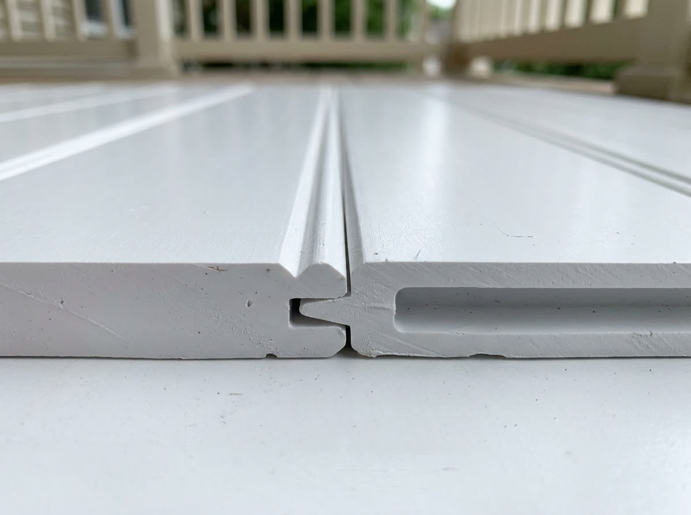

PVC porch flooring for
Western New York porches.
American Pro tongue-and-groove PVC porch flooring is stocked across Western New York and the Finger Lakes through Genesee Reserve Supply in Rochester and Buffalo. Engineered cellular PVC that won't rot, splinter, cup, or grey out through upstate freeze-thaw winters. Six wood-grain colors, a 25-year stain and fade limited warranty, and made in the USA.
A porch that survives
a Western New York winter.
Lake-effect snow, ice melt, and dozens of freeze-thaw cycles a year are exactly what destroys a wood porch. Western New York is one of the hardest climates in the country on porch flooring, and it's where cellular PVC earns its keep.
No freeze-thaw rot
Cellular PVC has no wood fiber, so meltwater has no path in. It won't absorb moisture, swell, cup, or rot through repeated Rochester and Buffalo freeze-thaw cycles.
Slip-resistant on ice melt
A slip-resistant surface that stays safer than wood when there's snow underfoot, salt residue, or morning dew, right through the long upstate shoulder seasons.
Won't grey out or splinter
Pressure-treated wood greys and splinters under WNY weather. American Pro holds its wood-grain finish with a 25-year stain and fade limited warranty, no sanding, staining, or sealing.
Stocked close to home
No special order from out of state. Genesee Reserve Supply stocks American Pro porch flooring at its Rochester and Buffalo branches and routes it through local lumberyards.
New to PVC porch flooring? See the full PVC porch flooring buying guide, compare PVC vs wood vs composite porch flooring, or read how to install PVC porch flooring.
Engineered.
Not assumed.
The same boards stocked at Genesee Reserve Supply in Rochester and Buffalo. Full technical data sheets and span guidance available on request.
Six colors, chosen for
Western New York houses.
Cool greys for a lakefront place in Hamburg or Canandaigua, warm browns and reds for the brick and clapboard Victorians all through Rochester, Buffalo, and the Finger Lakes villages. Every board is embossed wood-grain and carries the same 25-year stain and fade limited warranty.
Every finish is embossed wood-grain straight through the surface, not a printed film or a cap that can peel. Pick any combination and we ship free full-board samples to anywhere in Western New York, so you can hold the real color against your siding, trim, and roof before you commit.

A real tongue and groove.
Not a deck board with a gap.
This is the actual profile. The tongue on one edge seats into the groove on the next, so the finished floor reads as one continuous surface with a hairline seam, the way a painted porch has looked for a century.
No 1/4-inch gaps for leaves, snow, and salt to pack into. Face-fasten the first board, then blind-fasten through the tongue at every joist and the fasteners disappear.

Built for lake-effect winters.
And the thaw that follows.
The snow belt south of Buffalo and east of Rochester puts more freeze-thaw cycles on a porch than almost anywhere in the country. Cellular PVC has no wood fiber for meltwater to get into, so it does not absorb moisture, swell, cup, or rot.
No sanding, no staining, no sealing, ever. Wash it with soap and water once the snow is off and it looks the way it did the day it went down.
Hold the real board
against your own house.
A color on a screen is not a color on your porch. We ship free full-board samples of any of the six finishes to anywhere in Western New York, no cost and no obligation.
- Full-board samples, not chips, so you see the real grain and width
- Any combination of Driftwood, Slate, Beachwood, Tuscany, Chestnut, and Redwood
- Shipped from our Linden, NJ plant, usually within a few days
- Builder and lumberyard pricing available on the same call
Where to buy PVC porch flooring
in Western New York.
Across Western New York and the Finger Lakes, American Pro porch flooring is stocked and distributed by Genesee Reserve Supply. Ask your local lumberyard to source it through Genesee, or contact a branch directly.
-
Western New York & Finger Lakes
Genesee Reserve Supply, Inc.
Two-step wholesale distributor of building materials, serving independent lumber dealers across Western New York and the Finger Lakes since 1952.
Outside Western New York? See our statewide guide to PVC porch flooring across New York, or if you're near the Pennsylvania line, porch flooring for Pittsburgh and Western PA. Don't see your town below? Call us at 1-877-442-6776 or send us a note and we'll point you to the closest lumber dealer that carries American Pro porch flooring. The full East Coast dealer directory lists every authorized stocking partner with addresses and phone numbers.
Stocked across
Western New York.
Through Genesee Reserve Supply's network of independent lumberyards, American Pro porch flooring reaches communities across the Rochester and Buffalo metros and the Finger Lakes.
- Rochester
- Buffalo
- Henrietta
- Greece
- Victor
- Pittsford
- Webster
- Brighton
- Batavia
- Amherst
- Cheektowaga
- Tonawanda
- Orchard Park
- Canandaigua
- Geneva
- Penfield
- Fairport
- Monroe County
- Erie County
- Genesee County
- Ontario County
- The Finger Lakes
Buying porch flooring
in Western New York.
The questions Rochester, Buffalo, and Finger Lakes homeowners and builders ask most, answered straight.
Where can I buy PVC porch flooring in Rochester or Buffalo, NY?
American Pro PVC porch flooring is stocked across Western New York and the Finger Lakes through Genesee Reserve Supply, a two-step wholesale building-products distributor with branches in Rochester (200 Jefferson Rd) and Buffalo (300 Bailey Ave). Genesee routes American Pro porch flooring through its network of independent lumberyards across the region. Ask your local lumber dealer to order it through Genesee Reserve Supply, or call Genesee toll free at 1-800-724-1000.
Is American Pro porch flooring sold near me in the Finger Lakes?
Yes. Genesee Reserve Supply has served independent lumber dealers across the Finger Lakes and Western New York since 1952 and stocks American Pro porch flooring at both its Rochester and Buffalo branches. Most homeowners and builders in towns like Victor, Henrietta, Greece, Batavia, Amherst, and Cheektowaga can have their local lumberyard source it through Genesee.
Does PVC porch flooring hold up to upstate New York winters?
Cellular PVC is one of the best porch flooring choices for upstate New York's freeze-thaw climate. It has no wood fiber to absorb moisture, so it won't rot, cup, or swell through repeated freezing and thawing, and its slip-resistant surface stays safer than wood under snow, ice melt, and morning dew. American Pro porch flooring carries a 25-year stain and fade limited warranty.
Why does PVC porch flooring last longer than wood in Western NY?
Western New York porches face heavy snow, lake-effect moisture, and dozens of freeze-thaw cycles each winter, which is exactly what rots and splinters wood and greys out pressure-treated lumber. American Pro cellular PVC has no exposed wood fiber, so water has no path in. It won't rot, splinter, or grey out, and it never needs sanding, staining, or sealing.
How do I get free porch flooring samples in Western New York?
Request free full-board samples of any of the six wood-grain finishes from the porch flooring sample form. We ship anywhere in the continental U.S., including all of Western New York and the Finger Lakes, so you can compare colors against your own home before you order through Genesee.